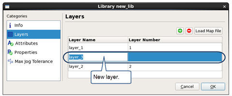

Adding Pattern Layers to a Library
You can add pattern layers to a library with the Calibre Pattern Matching GUI.
Pattern layers can be added to a library in order to make two libraries have the same number of pattern layers, so that the libraries can be merged. If this is the purpose for adding pattern layers, you should be aware of the desired order of the pattern layers. See “About Merging Pattern Libraries”.
New pattern layers are added as Don’t Care Pattern Layers by default.
This setting can be changed by selecting the layer on the Layers tab and choosing  >
>  Set/unset Don’t Care.
Set/unset Don’t Care.
Prerequisites
A pattern library is open in the Calibre Pattern Matching GUI. See “Invoking the Calibre Pattern Matching GUI”.
Procedure
- Select the Layers category. Tip
If a pattern is selected, you can click the Add Pattern Layer button (
 ) on the Layers tab
instead of doing the first two steps. This opens the Library dialog
box to the Layers category.
) on the Layers tab
instead of doing the first two steps. This opens the Library dialog
box to the Layers category. - Click the
 button to add a layer.
button to add a layer. The following image shows the Library dialog box after adding a new layer.
 - If the new layer is not a Don’t Care layer,
select the layer and choose
 >
>  Set/unset Don’t Care. Do this for
each new layer in each pattern in the library as needed.
Set/unset Don’t Care. Do this for
each new layer in each pattern in the library as needed.